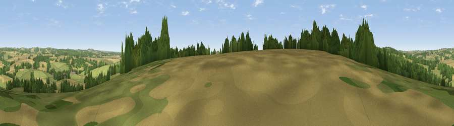

Viewpoint near Upton
#27510 in England · top 41% of its area beats it · near UptonThe view, rendered

A 360° render of this exact spot computed from the terrain model, tree cover and land cover — summer colours, afternoon light, calibrated against photographs of famous viewpoints. Real trees, hedges and buildings will differ in detail.
The panorama
Grey silhouette: terrain skyline in each direction (720 bearings, Earth curvature and refraction included). Dashed green: skyline with trees (+15 m) and buildings (+8 m) as obstacles. Blue strip: how far the ground is visible on each bearing.
Where the view opens
Wedge length = distance to the farthest visible ground on that bearing (vegetation-aware). Rings at 10, 25 and 50 km.
What fills the view
36% grassland · 34% cropland · 30% woodland
Angular shares of the visible panorama (visual magnitude), not map area. Landscape diversity 0.48 (0–1 Shannon).
Key numbers
More beautiful places nearby
The staircase of upgrades: each row has a higher view potential than everything closer. Driving times are estimates from straight-line distance, calibrated against real road routing — check an actual route before setting out.
| Place | Direction | Drive | Score |
|---|---|---|---|
| Viewpoint near Tangley | W · 1 km | ~3 min | 46.8 |
| Viewpoint near Upton | ESE · 1 km | ~4 min | 50.1 |
| Viewpoint near Vernham Dean | NW · 4 km | ~9 min | 50.8 |
| Haydown Hill | NW · 4 km | ~10 min | 55.3 |
| Viewpoint near Ham | N · 8 km | ~16 min | 62.6 |
| Walbury Hill | NNE · 8 km | ~16 min | 70.0 |
| Gallows Down | N · 8 km | ~16 min | 75.6 |
| Beacon Hill | ENE · 11 km | ~21 min | 76.7 |
51.28565, -1.50059 · source: screening · position refined by local search. Computed location — check access rights before visiting.